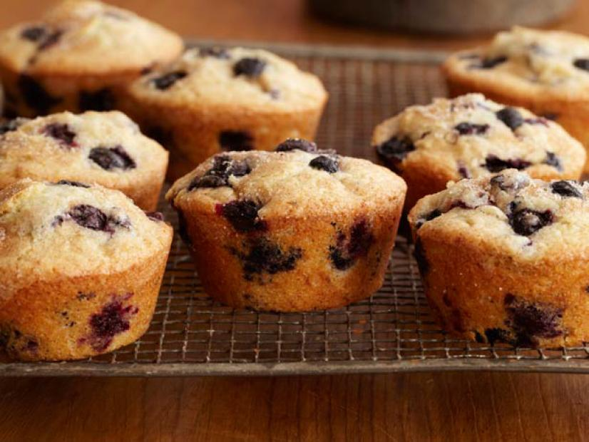

Double Blueberry Muffins

Recipe Despcription
This recipe for baking double blueberry muffins was found from the Food Network
website and is courtesy of Gale Gand. This recipe will take about an hour to bake
and about another 15 minutes to prep. THe amount of muffins that will yield from
this recipe is about 12.
Ingredients
- 1 stick (8 tablespoons) soften unsalted butter
- 1 cup and 2 tablespoons sugar
- 2 eggs
- 1 teaspoon pure vanilla extract
- 2 teaspoons baking powder
- 1/4 teaspoon salt
- 2 1/2 cups fresh or thawed frozen blueberries
- 2 cups flour
- 1/2 cup milk
- 1/4 teaspoon cinnamon
Steps
- Preheat oven to 375 degrees F
- Grease muffin tin
- With a mixer, cream the butter until it is smooth
- Add 1 cup of sugar and mix
- Add the eggs, vanilla, baking powder, and salt and mix together
- Mash 3/4 cup of blueberries with the back of a fork and add to the
batter and mix
- Mix together 1/2 of the flower and then 1/2 of the milf and mix
- Repeat with remaining flour and milk
- Fold in remaining bleberries by hand until well mixed
- Mix 2 tablespoons of sugar and cinnamin in seperate bowl
- Using a large sppon, fill each muffin cup 3/4 full
- Sprinkle cinnamon-sugar combination over the muffins
- Bake until golden brown and risen ~25-30 minutes
- Let cool in pan for about 30 minutes before serving